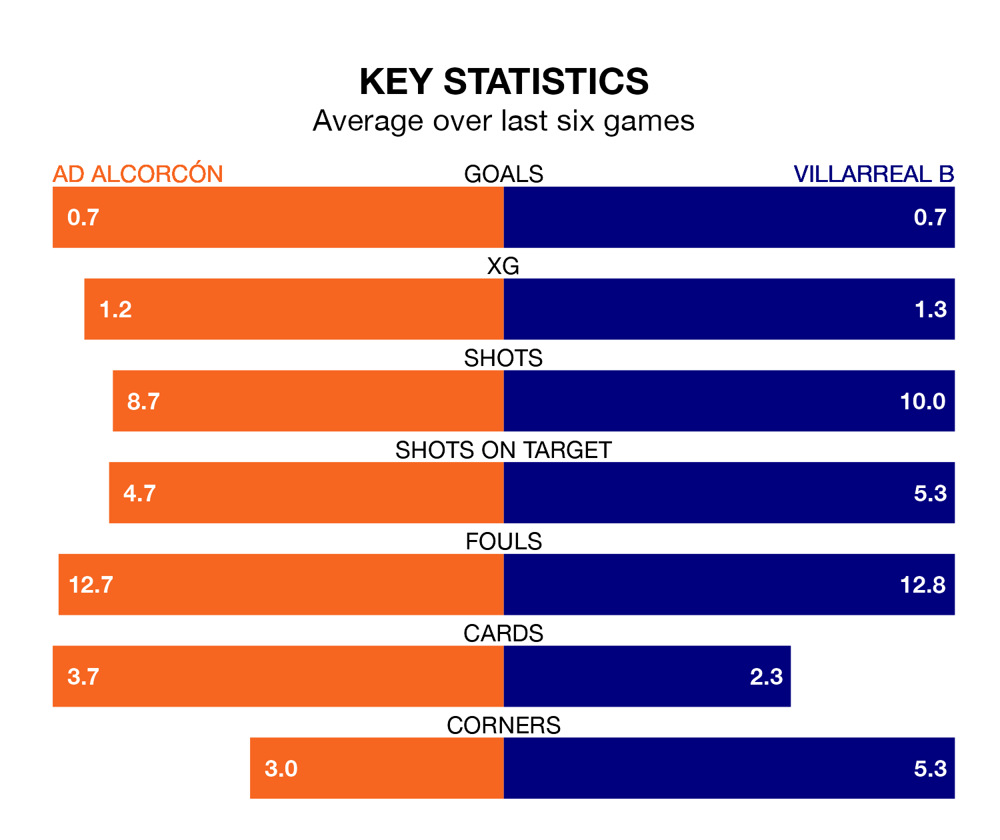

Struggling Villarreal B face AD Alcorcón away at the Estadio Santo Domingo on Monday looking to build on a win in their last league outing.
After securing all three points with a 2-1 victory over Burgos CF on April 7, Villarreal B sit bottom of the Segunda División.
They travel to play an Alcorcón side 18th in the standings, who also won their last match, 1-0 against Racing Santander, on April 8.
Alcorcón are in mixed form in the Segunda División, with two wins and two draws from their last six games.
With a win and five losses over that period, Villarreal B's form is worse – they have taken three points from 18, compared to the home team's eight.
In Álex Forés Mendoza, the visitors have one of the league's sharpest shooters so far this season. He has notched 13 goals in 34 appearances, to sit third in the scoring charts.
Alcorcón's top scorers, with five goals each, are Dyego Sousa and Jacobo González Rodrigañez.
With 26 goals in 34 games so far this season, Alcorcón are the league's lowest scorers with 0.8 goals per game. And they are conceding more than average, letting in 44 goals at a rate of 1.3 per game.
Villarreal B are also below average scorers, with 0.9 goals per game, compared to a league average of 1.1. They have conceded 1.5 goals per game.
Updated: 11:20 (UTC), 09/04/24